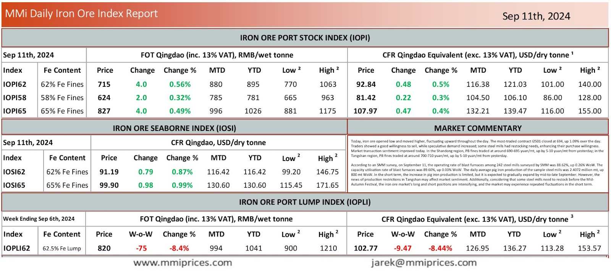

Today, iron ore opened low and moved higher, fluctuating upward throughout the day. The most-traded contract I2501 closed at 694, up1.09% over the day. Traders showed a good willingness to sell, while speculative demand increased; some steel mills had restocking needs, enhancing their purchase willingness. Market transaction sentiment improved today. In the Shandong region, PB fines traded at around 690-695 yuan/mt, up by 5-10 yuan/mt from yesterday; in the Tangshan region, PB fines traded at around 700-710 yuan/mt, up by 5-10 yuan/mt from yesterday. According to an SMM survey, on September 11, the operating rate of blast furnaces among 242 steel mills surveyed by SMM was 88.62%, up 0.26% WoW. The capacity utilisation rate of blast furnaces was 89.60%, up 0.03% WoW. The daily average pig iron production of the sample steel mills was 2.4072 million mt, up 800 mt WoW. In the short term, the increase in pig iron production is limited, but it is expected to gradually expand by mid-to-late September. However, the news of production restrictions in Tangshan may affect market sentiment. Additionally, considering that some steel mills need to restock before the Mid- Autumn Festival, the iron ore market’s long and short positions are intensifying, and the market may experience repeated fluctuations in the short term.

Download PDFSource: Metals Market Index (MMi)